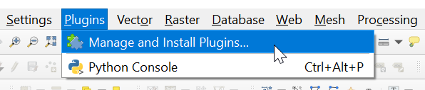
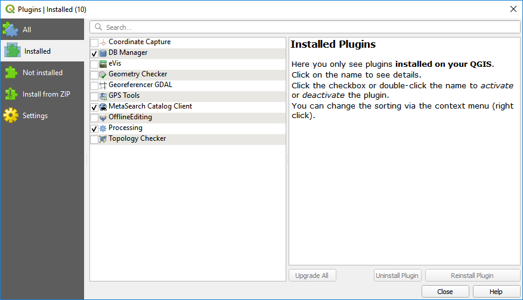
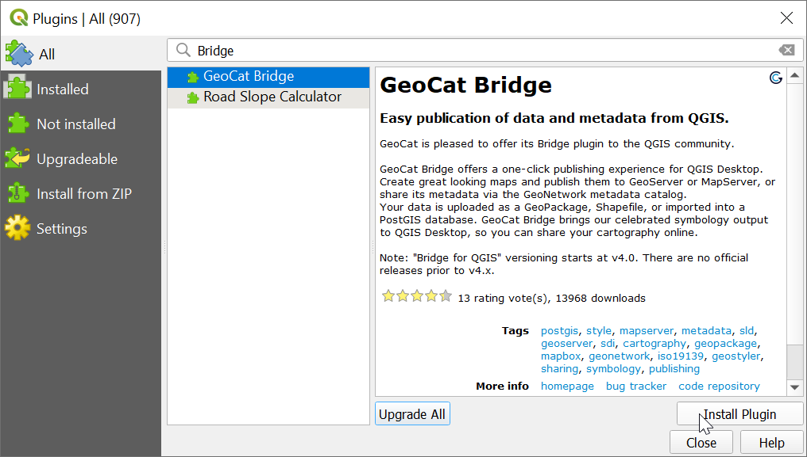
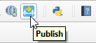

Installation
Requirements
Client-side
GeoCat Bridge requires QGIS 3.16 or newer. Both the standalone QGIS installation or the OSGeo distribution should work.
QGIS users who use a QGIS version beyond 3.16 should verify that the lxml Python dependency is available.
However, this only applies if you wish to import or publish metadata using Bridge.
Note
If you access the internet through a proxy server, you might experience some issues while publishing data or connecting to a server.
Server-side
GeoNetwork
GeoCat Bridge currently supports GeoNetwork version 3.4 and higher. GeoNetwork 2.x support has been deprecated and version 4.x is not supported yet.
GeoServer
Support starts at GeoServer version 2.13 and up. However, other versions since 2.4 are expected to run fine in most of the cases.
If you wish to use a direct connection to PostGIS (i.e. let Bridge handle the data upload instead of the GeoServer REST API), you will need to have access to that database instance.
If you wish to let GeoServer import your data into PostGIS (i.e. through the REST API instead of direct access), you need to make sure that the Importer extension is available on GeoServer. If you do not know if this extension is installed, simply try to publish something and Bridge will warn you if it isn’t.
MapServer
MapServer support starts at version 6.2 and up. However, other versions since 5.6 are expected to run fine in most of the cases.
FTP connection or file write access to MapServer project path.
How to install
To install the GeoCat Bridge for QGIS, please follow these steps:
Open the QGIS Plugin Manager by clicking on the menu entry.
You will now see a dialog similar to the one below, listing all your (pre-)installed plugins:

2. Click the All section on the sidebar to list all available plugins. Scroll down to find “GeoCat Bridge” or use the search box at the top to filter the list (e.g. by typing “Bridge”). Clicking on the “GeoCat Bridge” plugin entry will display detailed information about the plugin:

Click Install Plugin and wait until Bridge has been downloaded and installed.
4. Close the Plugin Manager when done. You should now have a new menu entry under the menu, which contains a couple of menu items related to the Bridge plugin:

You should also see a new toolbar button, that will open the Bridge Publish dialog.

In the Plugin Manager settings, note that you can configure QGIS to automatically check for plugin updates. Alternatively, you can update plugins manually using the Upgrade All button.